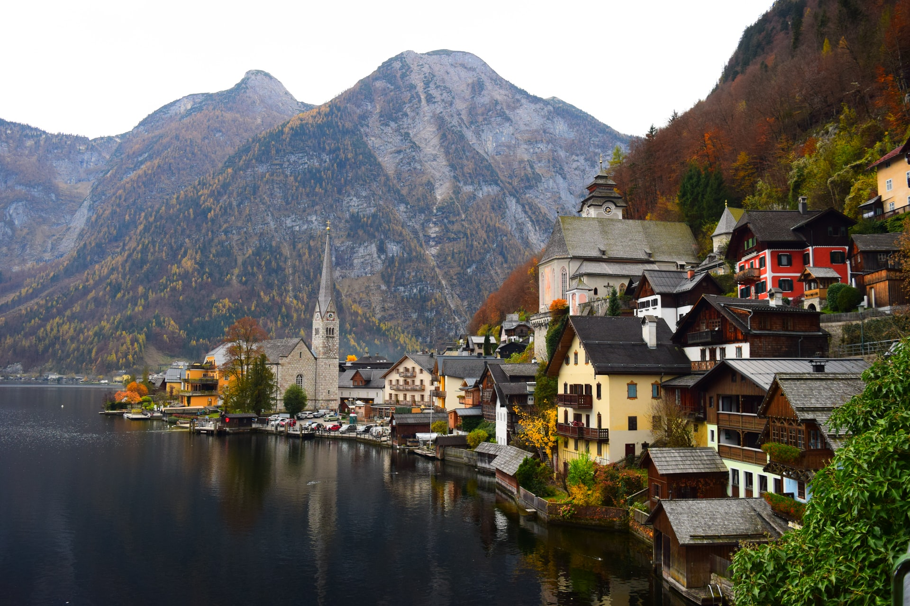

Österreich ist ein demokratischer und föderaler Bundesstaat, im Besonderen eine semipräsidentielle Republik. Seine großteils aus den historischen Kronländern hervorgegangenen neun Bundesländer sind das Burgenland, Kärnten, Niederösterreich, Oberösterreich, Salzburg, die Steiermark, Tirol, Vorarlberg und Wien. Das Bundesland Wien ist zugleich Bundeshauptstadt und auch einwohnerstärkste Stadt des Landes. Weitere Bevölkerungszentren sind Graz, Linz, Salzburg und Innsbruck. Das Land wird von der Böhmischen Masse und der Thaya im Norden, den Karawanken und dem Steirischen Hügelland im Süden, der Pannonischen Tiefebene im Osten sowie dem Rhein und dem Bodensee im Westen begrenzt. Mehr als 62 Prozent seiner Staatsfläche werden von alpinem Hochgebirge gebildet. Die Bezeichnung Österreich ist in ihrer althochdeutschen Form Ostarrichi erstmals aus dem Jahr 996 überliefert. Daneben war ab dem frühen Mittelalter die lateinische Bezeichnung Austria in Verwendung. Ursprünglich eine Grenzmark des Stammesherzogtums Baiern, wurde Österreich 1156 zu einem im Heiligen Römischen Reich eigenständigen Herzogtum erhoben. Nach dem Aussterben des Geschlechts der Babenberger 1246 setzte sich das Haus Habsburg im Kampf um die Herrschaft in Österreich durch. Das als Österreich bezeichnete Gebiet umfasste später die gesamte Habsburgermonarchie sowie in der Folge das 1804 konstituierte Kaisertum Österreich und die österreichische Reichshälfte der 1867 errichteten Doppelmonarchie Österreich-Ungarn.  Die heutige Republik entstand ab 1918, nach dem für Österreich-Ungarn verlorenen Ersten Weltkrieg, aus den zunächst Deutschösterreich genannten deutschsprachigen Teilen der Monarchie. Mit dem Vertrag von Saint-Germain wurden die Staatsgrenze und der Name Republik Österreich festgelegt. Damit einher ging der Verlust Südtirols. Die Erste Republik war von innenpolitischen Spannungen geprägt, die in einen Bürgerkrieg und die Ständestaatsdiktatur mündeten. Durch den sogenannten „Anschluss“ stand das Land ab 1938 unter nationalsozialistischer Herrschaft. Nach der Niederlage des Deutschen Reiches im Zweiten Weltkrieg wieder ein eigenständiger Staat, erklärte Österreich am Ende der alliierten Besatzung 1955 seine immerwährende Neutralität und trat den Vereinten Nationen bei. Österreich ist seit 1956 Mitglied im Europarat, Gründungsmitglied der 1961 errichteten Organisation für wirtschaftliche Zusammenarbeit und Entwicklung (OECD) und seit 1995 ein Mitgliedsstaat der Europäischen Union.